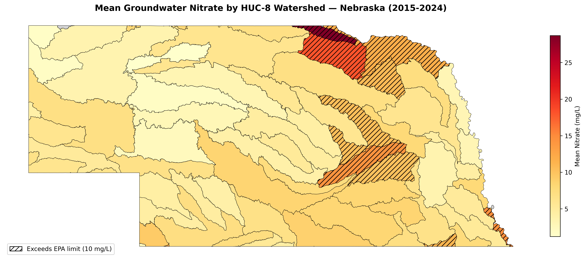
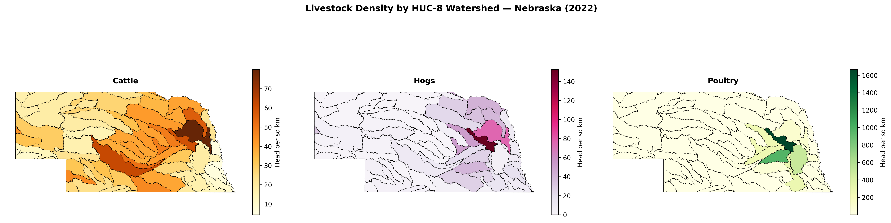
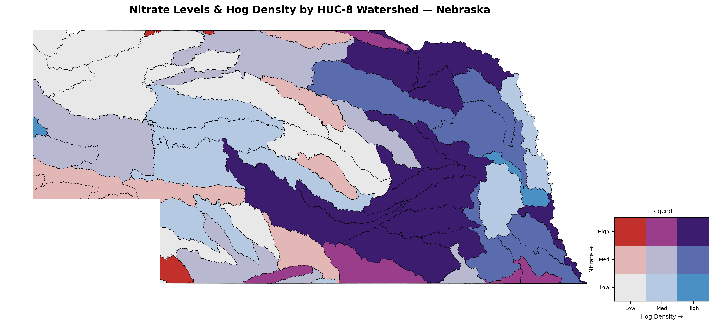
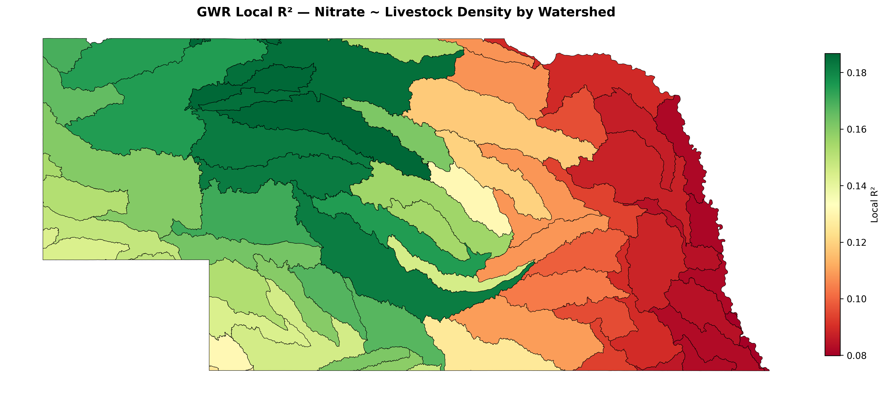

A watershed-scale analysis of groundwater nitrate and livestock density across Nebraska
This project continues directly from the Nebraska soil analysis. The soil project established a chemical baseline -- what pH and organic matter look like across the state. This one asks a more pointed question: does livestock density drive groundwater nitrate levels, and if so, which livestock types matter most?
The public health stakes are real. Nebraska has some of the highest risk in the country for groundwater nitrate contamination, driven by high nitrogen inputs, irrigated crops, shallow groundwater depths, and sandy soils. Nearly 100% of rural Nebraskans rely on groundwater for drinking water, and the state's 23 Natural Resources Districts actively monitor nitrate levels across thousands of private wells. High nitrate in drinking water is linked to methemoglobinemia (blue baby syndrome) in infants and has been associated in early studies with elevated pediatric cancer rates. The EPA limit of 10 mg/L exists for a reason.
I'm interested in how human activity produces measurable environmental damage with downstream consequences for health and economy. Understanding which agricultural activities correlate most strongly with elevated nitrate -- at what scale, and where -- is a step toward knowing where mitigation efforts might have the most impact.
This project maps mean groundwater nitrate concentrations across Nebraska's HUC-8 watersheds using well sampling data from the Nebraska Groundwater Quality Clearinghouse, then tests whether watershed-level livestock density -- cattle, hogs, and poultry separately -- explains variation in those nitrate levels. The analysis spans 2015-2024 for nitrate and uses the 2022 USDA Census of Agriculture for livestock counts, chosen to bracket a common reference year.
HUC-8 subbasins were chosen as the spatial unit rather than counties because they are hydrologically meaningful -- nitrate moves through water and tends to accumulate within drainage basins, making watershed boundaries more appropriate than administrative ones for this question.
Nitrate data came from the Nebraska Groundwater Quality Clearinghouse, a statewide database maintained by the Nebraska Department of Environment and Energy containing results from wells sampled by the state's 23 Natural Resources Districts. Records were filtered to Nitrate-N (ParamID 22, mg/L) and the 2015-2024 time window. The three-sheet database (Facility, Sample, Result) was joined on FacilityID and SampleID to link concentrations to well locations. Concentration values were averaged per well across the time window, then spatially joined to HUC-8 watersheds to produce a mean nitrate value per watershed.
HUC-8 watershed boundaries were loaded via pygeohydro from the USGS Watershed Boundary Dataset. Livestock counts came from the USDA NASS Quick Stats API, querying the 2022 Census of Agriculture at county resolution for cattle, hogs, broiler chickens, layer chickens, and turkeys. Poultry totals were constructed by summing the three poultry categories, as no single county-level inventory total is available. County counts were converted to density (head per square kilometer) and apportioned to watersheds using area-weighted overlay.
Statistical analysis included Pearson and Spearman correlation, OLS multiple regression, univariate and bivariate Moran's I spatial autocorrelation, threshold analysis comparing livestock density above and below the EPA limit, and Geographically Weighted Regression (GWR) to test whether the livestock-nitrate relationship varies across space.
Northeast Nebraska -- particularly the Ponca and Lower Niobrara watersheds -- showed the highest mean nitrate concentrations, several exceeding the EPA 10 mg/L limit. The Sandhills region in central Nebraska was consistently low, consistent with lower agricultural activity and the high organic matter observed in the soil analysis. Moran's I for nitrate was 0.31 (p = 0.001), indicating significant but moderate spatial clustering -- weaker than the pH clustering in the soil project, which makes sense given that nitrate is influenced by more localized factors like individual farm practices and aquifer characteristics.
Of the three livestock types, hogs showed the strongest and most consistent relationship with nitrate across every test. Cattle were expected to be the dominant driver given their prevalence across the state, but the results didn't support that. Cattle in Nebraska are predominantly range-fed across large areas, which likely dilutes their density signal at the watershed scale. Hog confinement operations, by contrast, concentrate waste at much higher densities per square kilometer. Poultry showed a moderate Spearman correlation but weaker spatial co-clustering, suggesting the relationship may be more statistical than geographic.
The GWR results were unexpected. The model's local R² was higher in western Nebraska than in the east -- the opposite of what intensive eastern agriculture would suggest. One interpretation is that in eastern Nebraska, multiple nitrate sources (fertilizer, crop residue, concentrated animal feeding operations) compete with and obscure the livestock density signal. In the west and center, where those other sources are less dominant, livestock density accounts for a larger share of whatever nitrate variation exists.




Key statistical results. Spearman correlation is reported alongside Pearson because livestock density distributions are heavily right-skewed, making Spearman more robust to the influence of high-density outlier watersheds.
| Test | Variable | Result | p-value |
|---|---|---|---|
| Moran's I | Nitrate | I = 0.310 | 0.001 |
| Moran's I | Cattle density | I = 0.504 | 0.001 |
| Moran's I | Hog density | I = 0.323 | 0.002 |
| Pearson correlation | Nitrate vs hogs | r = 0.210 | 0.089 |
| Spearman correlation | Nitrate vs cattle | r = 0.272 | 0.026 |
| Spearman correlation | Nitrate vs hogs | r = 0.489 | <0.001 |
| Spearman correlation | Nitrate vs poultry | r = 0.391 | 0.001 |
| OLS regression | Nitrate ~ all livestock | R² = 0.056, F p = 0.302 | 0.302 |
| GWR | Nitrate ~ all livestock | R² = 0.150 | — |
| Bivariate Moran's I | Nitrate vs hogs | I = 0.179 | 0.032 |
Several methodological constraints limit how far the findings can be extended and point toward areas requiring further study.